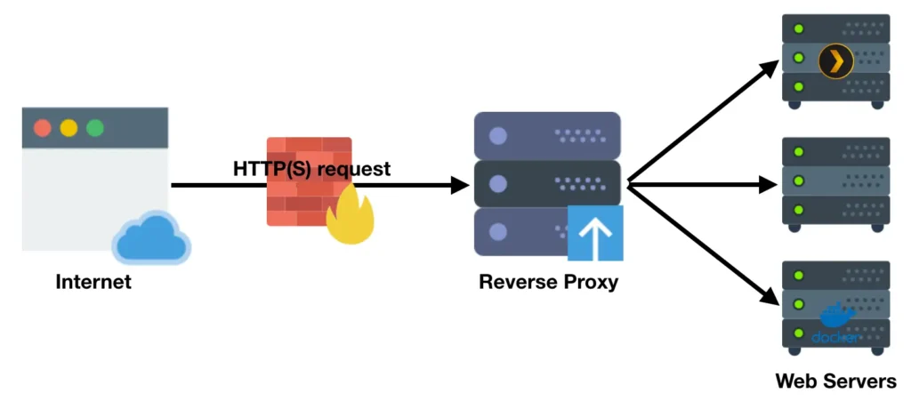
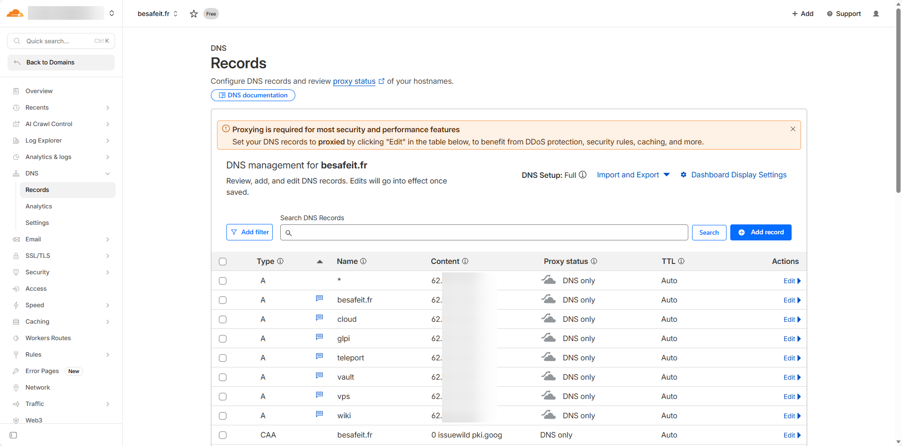
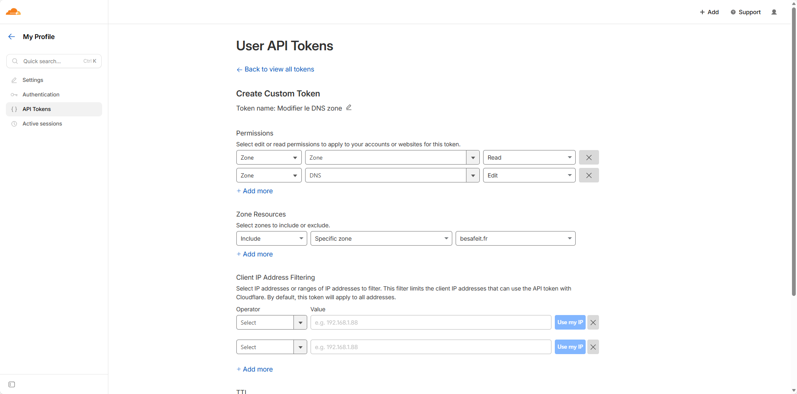
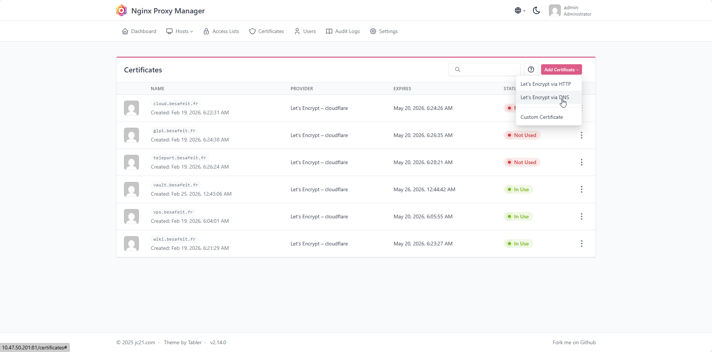
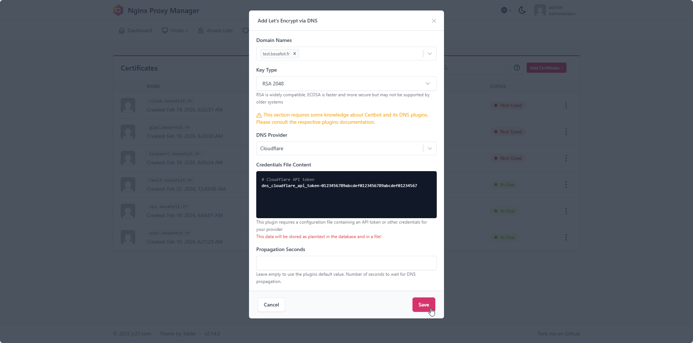

🔁 Nginx Proxy Manager
Mise en place d’un Nginx Proxy Manager , il est le point d'entré par internet vers mes ressources interne.
⚙️ Détails techniques
| Élément | Valeur |
|---|---|
| OS | Debian 13 |
| Rôle | Reverse-proxy / entrée HTTP(S) unique Internet |
| NPM | NTE-NPM-001 – 10.47.50.201/24 (DMZ) |
| Ports exposés | 80 / 443 / 81 (UI Admin) |
🌐 Étape 1 : Architecture & rôle du service
Nginx Proxy Manager (NPM) est utilisé dans l’infrastructure BESAFE comme reverse proxy central.
Son rôle est de permettre l’exposition sécurisée des services internes vers Internet.
Il agit comme une passerelle HTTP/HTTPS entre l’extérieur et les applications hébergées dans l’infrastructure.
Principe de fonctionnement
Lorsqu’un utilisateur accède à un service via un nom de domaine : https://wiki.besafeit.fr
la requête suit le chemin suivant :

NPM agit donc comme point d’entrée unique pour les applications web.
Rôle du Reverse Proxy
Le reverse proxy permet plusieurs fonctions essentielles :
Terminaison TLS
Les certificats SSL sont gérés directement par NPM :
- génération automatique via Let's Encrypt
- renouvellement automatique
- gestion centralisée des certificats
Publication des services internes
Les applications internes ne sont jamais exposées directement sur Internet.
NPM redirige simplement les requêtes vers les services internes.
Exemple : wiki.besafeit.fr → 10.47.130.102:3000 vault.besafeit.fr → 10.47.130.201:8080 cloud.besafeit.fr → 10.47.50.210:8080
🐳 Étape 2 : Déploiement Docker
Dans l’infrastructure BESAFE, Nginx Proxy Manager est déployé via Docker Compose sur une machine dédiée.
Le service est composé de deux conteneurs :
- nginx proxy manager
- base de données MariaDB
Cette architecture permet :
- la persistance des données
- une maintenance simplifiée
- un déploiement rapide
- une isolation des services
Arborescence du service
Le service est installé dans le répertoire : /opt/npm Structure : /opt/npm ├── docker-compose.yml ├── data/ ├── letsencrypt/ └── mysql/
Description des répertoires :
| Répertoire | Rôle |
|---|---|
| data | configuration NPM |
| letsencrypt | certificats SSL |
| mysql | données MariaDB |
Fichier docker-compose.yml
services:
app:
image: 'jc21/nginx-proxy-manager:latest'
restart: unless-stopped
ports:
- "80:80" # HTTP
- "443:443" # HTTPS
- "81:81" # Interface Admin
environment:
TZ: "Australia/Brisbane"
DB_MYSQL_HOST: "db"
DB_MYSQL_PORT: 3306
DB_MYSQL_USER: "npm"
DB_MYSQL_PASSWORD: "npm"
DB_MYSQL_NAME: "npm"
volumes:
- ./data:/data
- ./letsencrypt:/etc/letsencrypt
depends_on:
- db
db:
image: 'jc21/mariadb-aria:latest'
restart: unless-stopped
environment:
MYSQL_ROOT_PASSWORD: "npm"
MYSQL_DATABASE: "npm"
MYSQL_USER: "npm"
MYSQL_PASSWORD: "npm"
MARIADB_AUTO_UPGRADE: '1'
volumes:
- ./mysql:/var/lib/mysql
Port exposés :
| Port | Fonction |
|---|---|
| 80 | HTTP |
| 443 | HTTPS |
| 81 | Interface d'administration |
Démarrage du service :
Dans le répertoire : /opt/npm
docker compose up -d
docker ps
🔐 Étape 3 : Certificats Let's Encrypt via DNS Cloudflare
Dans l’infrastructure BESAFE, Nginx Proxy Manager gère les certificats TLS de manière centralisée via Let’s Encrypt.
La méthode utilisée n’est pas le challenge HTTP classique, mais un challenge DNS avec Cloudflare.
Cette approche permet :
- d’émettre des certificats sans exposer temporairement le port HTTP
- de gérer facilement plusieurs sous-domaines
- d’automatiser le renouvellement des certificats
- de s’intégrer proprement à une architecture reverse proxy
Principe de fonctionnement
Le mécanisme repose sur la chaîne suivante :
Nginx Proxy Manager
│
▼
Cloudflare API
│
▼
Création d’un enregistrement DNS temporaire (_acme-challenge)
│
▼
Validation par Let’s Encrypt
│
▼
Émission du certificat
NPM utilise donc un token API Cloudflare pour créer automatiquement les enregistrements DNS nécessaires à la validation.
Intégration Cloudflare

Les différents sous-domaines publiés via NPM pointent vers l’IP publique de l’infrastructure
Les différents sous-domaines publiés via NPM pointent vers l’IP publique de l’infrastructure
Token API Cloudflare

Un token API restreint est utilisé pour permettre à NPM de modifier uniquement la zone DNS nécessaire.
Permissions attribuées : - Zone / Zone / Read - Zone / DNS / Edit
Portée :
Specific zone → besafeit.fr
Cette approche est préférable à l’utilisation de la Global API Key, car elle limite fortement les privilèges donnés au service.
Génération d'un Certificat dans NPM

Cette méthode présente plusieurs avantages dans BESAFE : - pas besoin d’ouvrir temporairement un challenge HTTP spécifique - fonctionne même pour des services non directement exposés en clair - compatible avec plusieurs sous-domaines - automatisation complète depuis NPM - renouvellement transparent des certificats
Elle est particulièrement adaptée à une architecture où NPM joue le rôle de frontal HTTPS unique.

Cici, il suffit seulement de renseigner ton registar DNS, puis de remplacer dans le credential par ton token API.✅ Résumé des étapes – Nginx Proxy Manager
| Étape | Objectif | Résultat attendu |
|---|---|---|
| 1️⃣ Architecture NPM | Centraliser la publication des services web | Reverse proxy unique pour l’infrastructure |
| 2️⃣ Déploiement Docker | Héberger NPM et sa base MariaDB | Service persistent et maintenable |
| 3️⃣ Certificats Let's Encrypt | Automatiser la gestion TLS via DNS Cloudflare | Certificats SSL valides |